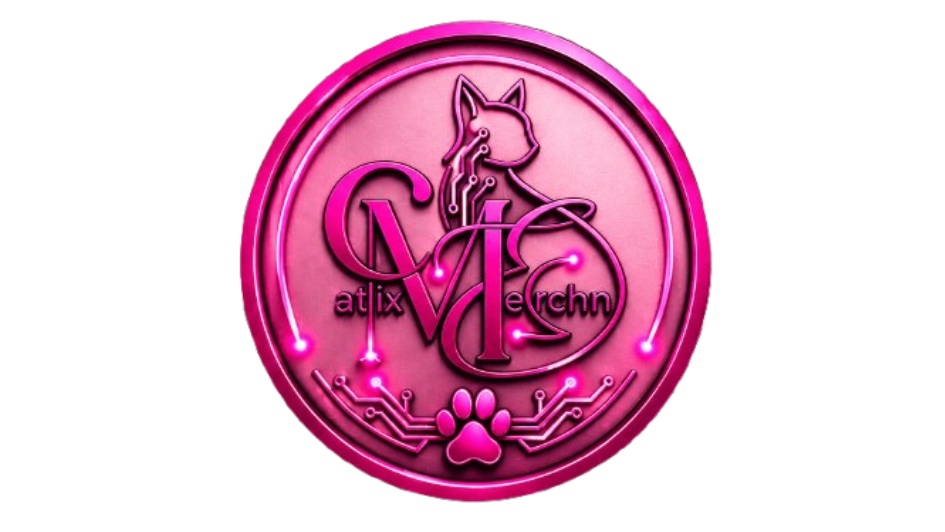

El equipo detrás del arenero más inteligente para tu gato.
"Tecnología al servicio del bienestar felino."
Un proyecto universitario con impacto real · Cuenca, Ecuador · 2026
CatixMerchn nació con una idea clara: que tener un gato no debería significar malos olores ni limpiezas constantes.
Combinamos electrónica, programación e IoT para crear un sistema automático que cuida a tu gato y te da tranquilidad a ti.
Es un proyecto universitario que aplica tecnología real a una necesidad cotidiana de millones de dueños de mascotas.
Sensor de presencia identifica cuando el gato entra y cuánto tiempo usa el arenero.
Motor activa el rastrillo automático segundos después de que el gato sale.
Filtro de carbón y extractor neutralizan los malos olores al instante.
Notificación en tu celular con estado, frecuencia y alertas de mantenimiento.